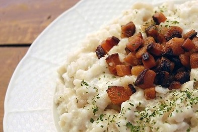
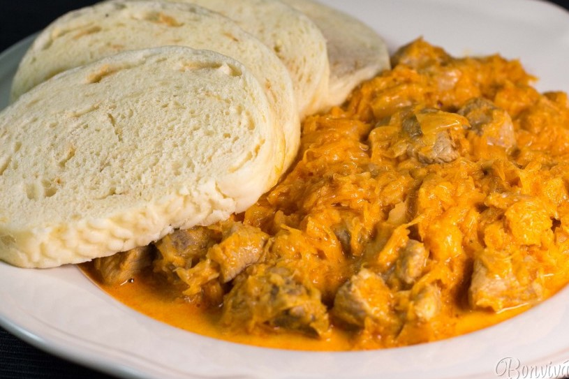
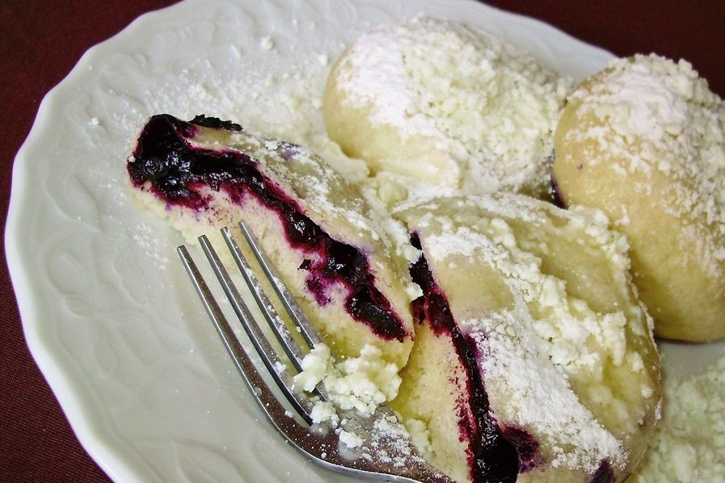

Slovak food is a savory, flavorful mix of many different cultures. Some examples of traditional Slovak food are below:
| A Day in the food of Slovakia | |||
|---|---|---|---|
| Breakfast | Lunch | Dinner | Dessert |
| Palacinky | Bryndzove Halusky | Segedinsky Gulas | Parene Buchty |
| Similar to a crepe, buttered with jam, nutella or any number of possible toppings | Slovakia's national dish: potato dumplings with a sharp, tangy cheese served warm with bacon and chives atop. | Marinated Pork with a heart amount of parprika and added saurkraut | Steamed pastry with plum jam inside and dusted with powdered sugar |
|  |  |  |
Slovak Plum Jam
Slovak Plum Jam is thick and sugary, and very delicious.
Bryndza
Bryndza is a sheep's cheese which is produced and sold all over Slovakia. Finding good quality bryndza is the United States is quite a chore!
Saurkraut Slovak saurkraut is often sweetened with a larger touch of sugar after it has been packaged. This gives a interesting and different charachter to all of the savory dishes in which it's used.